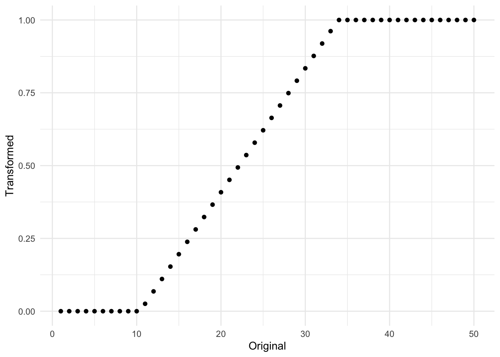
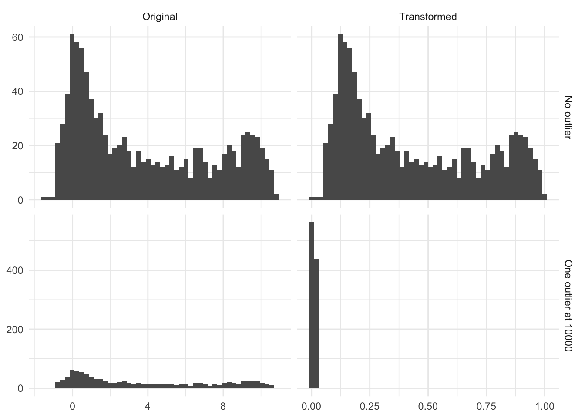

8 Range
Range scaling, also known as Min-Max scaling, is a method to make the data fit into a pre-defined interval. Typically the equation used to illustrate this method is shown so
\[ X_{scaled} = \dfrac{X - \text{min}(X)}{\text{max}(X) - \text{min}(X)} \tag{8.1}\]
This equation only shows what happens if you use the software with defaults. This will scale your variable to be in the range \([0, 1]\). It is important to treat this as a learned method, and we will thus calculate \(\text{min}(X)\) and \(\text{max}(X)\) on the training data set, and use those to apply the transformation on new data. One of the benefits of this method is that it transforms any variable into a predefined range of 0 and 1. Unless of cause, a new data point is outside the range. Suppose that the original data was in the range \(\text{min}(X) = 5\) and \(\text{max}(X) = 100\), and we encounter a new data point with the value 200. Then according to Equation 8.2, we would get a transformed value of (200-5)/(100-5) = 2.0526 which is very much not between 0 and 1. We thus have a violation of our original goal. One way to get around this is to use clipping. Clipping is a technique when using this method where any values less than \(\text{min}(X)\) will be noted as 0 and any values larger than \(\text{max}(X)\) will be noted as 1. This little tick ensures that any new data points stay within the range. Expanding our equation to the following
\[ X_{scaled}= \begin{cases} 0, & X_{new} < \text{min}(X_{train})\\ 1 & X_{new} > \text{max}(X_{train})\\ \dfrac{X_{new} - \text{min}(X_{train})}{\text{max}(X_{train}) - \text{min}(X_{train})}, & \text{otherwise} \end{cases} \tag{8.2}\]
The equation is a lot bigger, but what is different is that we specify that the transformation should be done using training data, and by adding a couple of branches to reflect the clipping. In practice, it will look something like Figure 8.1 where the original data had a range of \([10, 32]\).
Sadly we are not done quite yet. One last thing that Equation 8.2 doesn’t take into account is that sometimes people don’t want to transform to be into any range, not just \([0, 1]\). This gives us the final equation
\[ X_{scaled}= \begin{cases} R_{lower}, & X_{new} < \text{min}(X_{train})\\ R_{upper} & X_{new} > \text{max}(X_{train})\\ \dfrac{X_{new} - \text{min}(X_{train})}{\text{max}(X_{train}) - \text{min}(X_{train})} \cdot (R_{upper}-R_{lower}) + R_{lower}, & \text{otherwise} \end{cases} \tag{8.3}\]
Where Equation 8.3 now has \(R_{lower}\) to represent a user-defined lower bound, and \(R_{upper}\) representing the corresponding user-defined upper bound. I would recommend that you keep Equation 8.1 in mind when thinking about this method but also include a little footnote that doesn’t include all the little options.
One thing you should know is how this transformation is affected by outliers. Clipping essentially ignores the magnitude of how much an outlier is. There is no difference between a new value of 100 and 100000 to a variable that had a range of \([0, 90]\) on the training data set. This might be a problem, and it is up to you as the practitioner to decide. One option would be to turn off clipping, but it would violate the assumption that all future transformed observations will be within a specific range.
Below is the figure Figure 8.2 is an illustration of the effect of having a single high value. In this case, a single observation with the value `10000` moved the transformed distribution much tighter around zero. And all but removed the variance of the non-outliers.
# A tibble: 4,000 × 3
name value outlier
<chr> <dbl> <chr>
1 Original 1.54 No outlier
2 Transformed 0.249 No outlier
3 Original 0.235 No outlier
4 Transformed 0.144 No outlier
5 Original 0.370 No outlier
6 Transformed 0.155 No outlier
7 Original 9.51 No outlier
8 Transformed 0.894 No outlier
9 Original 9.68 No outlier
10 Transformed 0.907 No outlier
# ℹ 3,990 more rows
8.1 Pros and Cons
8.1.1 Pros
- Fast calculations
- Transformation can easily be reversed, making its interpretations easier on the original scale, provided that clipping wasn’t turned on
8.1.2 Cons
- Turning on clipping diminishes the effect of outliers by rounding them up/down
- Doesn’t work with zero variance data as
max(x) - min(x) = 0, yielding a division by zero - Cannot be used with sparse data as it isn’t preserved
8.2 R Examples
step_range() clips. Does allow the user to specify range step_minmax() doesn’t clip. Doesn’t allow users to specify a range. A PR is planned to allow users to turn off clipping in step_range()
We will be using the ames data set for these examples.
library(recipes)
library(modeldata)
data("ames")
ames |>
select(Sale_Price, Lot_Area, Wood_Deck_SF, Mas_Vnr_Area)# A tibble: 2,930 × 4
Sale_Price Lot_Area Wood_Deck_SF Mas_Vnr_Area
<int> <int> <int> <dbl>
1 215000 31770 210 112
2 105000 11622 140 0
3 172000 14267 393 108
4 244000 11160 0 0
5 189900 13830 212 0
6 195500 9978 360 20
7 213500 4920 0 0
8 191500 5005 0 0
9 236500 5389 237 0
10 189000 7500 140 0
# ℹ 2,920 more rowsWe will be using the step_range() step for this
range_rec <- recipe(Sale_Price ~ ., data = ames) |>
step_range(all_numeric_predictors()) |>
prep()
range_rec |>
bake(new_data = NULL, Sale_Price, Lot_Area, Wood_Deck_SF, Mas_Vnr_Area)# A tibble: 2,930 × 4
Sale_Price Lot_Area Wood_Deck_SF Mas_Vnr_Area
<int> <dbl> <dbl> <dbl>
1 215000 0.142 0.147 0.07
2 105000 0.0482 0.0983 0
3 172000 0.0606 0.276 0.0675
4 244000 0.0461 0 0
5 189900 0.0586 0.149 0
6 195500 0.0406 0.253 0.0125
7 213500 0.0169 0 0
8 191500 0.0173 0 0
9 236500 0.0191 0.166 0
10 189000 0.0290 0.0983 0
# ℹ 2,920 more rowsWe can also pull out what the min and max values were for each variable using tidy()
range_rec |>
tidy(1)# A tibble: 33 × 4
terms min max id
<chr> <dbl> <dbl> <chr>
1 Lot_Frontage 0 313 range_FGmgk
2 Lot_Area 1300 215245 range_FGmgk
3 Year_Built 1872 2010 range_FGmgk
4 Year_Remod_Add 1950 2010 range_FGmgk
5 Mas_Vnr_Area 0 1600 range_FGmgk
6 BsmtFin_SF_1 0 7 range_FGmgk
7 BsmtFin_SF_2 0 1526 range_FGmgk
8 Bsmt_Unf_SF 0 2336 range_FGmgk
9 Total_Bsmt_SF 0 6110 range_FGmgk
10 First_Flr_SF 334 5095 range_FGmgk
# ℹ 23 more rowsusing the min and max arguments we can set different ranges
range_rec <- recipe(Sale_Price ~ ., data = ames) |>
step_range(all_numeric_predictors(), min = -2, max = 2) |>
prep()
range_rec |>
bake(new_data = NULL, Sale_Price, Lot_Area, Wood_Deck_SF, Mas_Vnr_Area)# A tibble: 2,930 × 4
Sale_Price Lot_Area Wood_Deck_SF Mas_Vnr_Area
<int> <dbl> <dbl> <dbl>
1 215000 -1.43 -1.41 -1.72
2 105000 -1.81 -1.61 -2
3 172000 -1.76 -0.896 -1.73
4 244000 -1.82 -2 -2
5 189900 -1.77 -1.40 -2
6 195500 -1.84 -0.989 -1.95
7 213500 -1.93 -2 -2
8 191500 -1.93 -2 -2
9 236500 -1.92 -1.33 -2
10 189000 -1.88 -1.61 -2
# ℹ 2,920 more rows8.3 Python Examples
MinMaxScaler() doesn’t clip by default. Allows the user to specify a range.